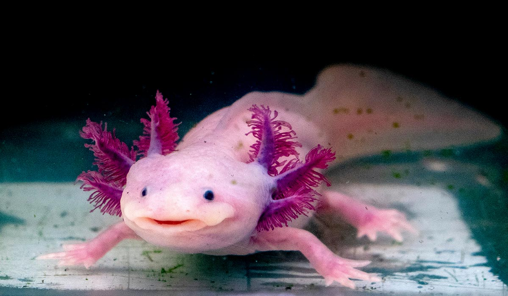
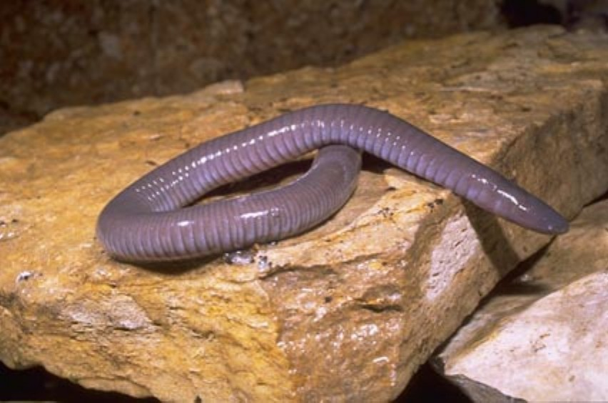
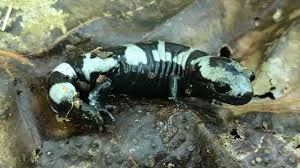

MENU
AJOLOTE

El Ajolote mexicano vive en lagos y canales de agua dulce, principalmente en la zona de Xochimilco. Su hábitat tiene aguas tranquilas, con muchas plantas acuáticas y fondo de lodo donde puede esconderse y encontrar alimento. Prefiere lugares con poca corriente y buena vegetación porque ahí se protege de depredadores. El agua suele ser fresca y con suficiente oxígeno para que pueda respirar con sus branquias externas. Este ambiente también le permite reproducirse y desarrollar sus huevos con mayor seguridad. Actualmente su hábitat natural se ha reducido por la contaminación y la urbanización
CARACTERISTICAS
Tiene branquias externas en forma de plumas a los lados de la cabeza.
Puede regenerar partes de su cuerpo, como patas, cola e incluso partes del corazón o cerebro.
Pasa toda su vida en el agua, aunque es un anfibio.
Tiene cara ancha y ojos pequeños, lo que le da una apariencia “sonriente”.
Puede medir aproximadamente 15 a 30 cm de largo.
RANA OJOS ROJOS
La rana de ojos rojos es un anfibio arborícola de Centroamérica, reconocido por su llamativa coloración verde brillante, costados azules/amarillos, patas naranjas y enormes ojos rojos. Nocturna y no venenosa, utiliza sus colores para asustar a depredadores (coloración de sobresalto).Lo más notable son sus grandes ojos rojos con pupila vertical. Como adultos llegan a tener colores brillantes sobre todo su cuerpo.Predomina el verde, pero usualmente presentan otros colores como azul o amarillo. Las patas delanteras presentan un azul brillante, mientras que las traseras son rojas o anaranjadas. La coloración de esta rana es muy llamativa. El macho es más pequeño que la hembra: 56 mm y la hembra 71 mm. Son de hábitos nocturnos y arborícolas.
CARACTERISTICAS
Apariencia Física: Piel verde brillante en el dorso, vientre blanco, y bandas laterales azules o amarillas. Patas de color naranja o rojo intenso.
Ojos: Grandes y de color rojo brillante con pupilas verticales, adaptados para la visión nocturna.
Hábitat: Bosques tropicales húmedos de tierras bajas desde México hasta Panamá, viviendo cerca de ríos y zonas pantanosas.
Comportamiento: Son animales nocturnos y arbóreos que se camuflan durante el día durmiendo bajo las hojas.
Reproducción: Ponen huevos en la vegetación sobre el agua. Cuando los renacuajos nacen, caen directamente al agua.
Defensa: No son venenosas; utilizan sus llamativos ojos para espantar a sus depredadores.
RANA TORO

La Rana toro es un anfibio grande que vive principalmente en lagos, ríos, estanques y pantanos. Es originaria de Estados Unidos, pero también se encuentra en otros lugares de América. Prefiere lugares con mucha agua y vegetación donde puede esconderse y cazar. Esta rana se caracteriza por su gran tamaño, ya que puede medir hasta 20 cm de largo. Su piel es generalmente verde o café, lo que le ayuda a camuflarse en su entorno. Se alimenta de insectos, peces pequeños, otras ranas e incluso pequeños animales. Además, recibe el nombre de “rana toro” porque su croar es fuerte y se parece al sonido de un toro. Es un animal carnívoro y muy buen nadador.
CARACTERISTICAS
Tiene patas traseras muy fuertes, que le permiten saltar largas distancias.
Respira por la piel y por los pulmones, como la mayoría de los anfibios.
Pone muchos huevos, una hembra puede poner miles de huevos en el agua.
Pasa por metamorfosis, primero nace como renacuajo y después se convierte en rana adulta.
Es más activa durante la noche, cuando sale a buscar alimento
CECILIA

La Cecilia es un anfibio que tiene el cuerpo alargado y sin patas, parecido a una lombriz o a una serpiente. Vive principalmente bajo la tierra o en lugares húmedos de regiones tropicales. Su piel es suave y húmeda, y casi no tiene ojos visibles porque pasa la mayor parte del tiempo enterrada.
CARACTERISTICAS
No tiene patas, su cuerpo es largo y cilíndrico.
Vive bajo tierra en suelos húmedos o cerca del agua.
Tiene ojos muy pequeños, porque casi no usa la vista.
Se alimenta de insectos, lombrices y pequeños invertebrados.
Su piel es lisa y húmeda, como la de otros anfibios.
SALAMANDRA

La Salamandra es un anfibio que tiene el cuerpo alargado, una cola larga y cuatro patas cortas. Vive en lugares húmedos, como bosques, cerca de ríos, lagos o debajo de piedras y troncos. Su piel es suave y húmeda, y puede tener colores como negro, café, amarillo o naranja, a veces con manchas. Se alimenta principalmente de insectos, gusanos y pequeños invertebrados. La salamandra necesita humedad para vivir, por eso suele salir más durante la noche o cuando el ambiente está húmedo. También es un animal interesante porque algunas especies pueden regenerar partes de su cuerpo, como la cola o algunas extremidades
CARACTERISTICAS
Pone huevos en el agua o en lugares muy húmedos.
Respira por branquias cuando es larva y luego puede desarrollar pulmones al crecer.
Tiene movimientos lentos y suele caminar más que saltar.
Puede tener toxinas en la piel para defenderse de depredadores.
Prefiere climas frescos y húmedos, por lo que evita lugares muy secos.